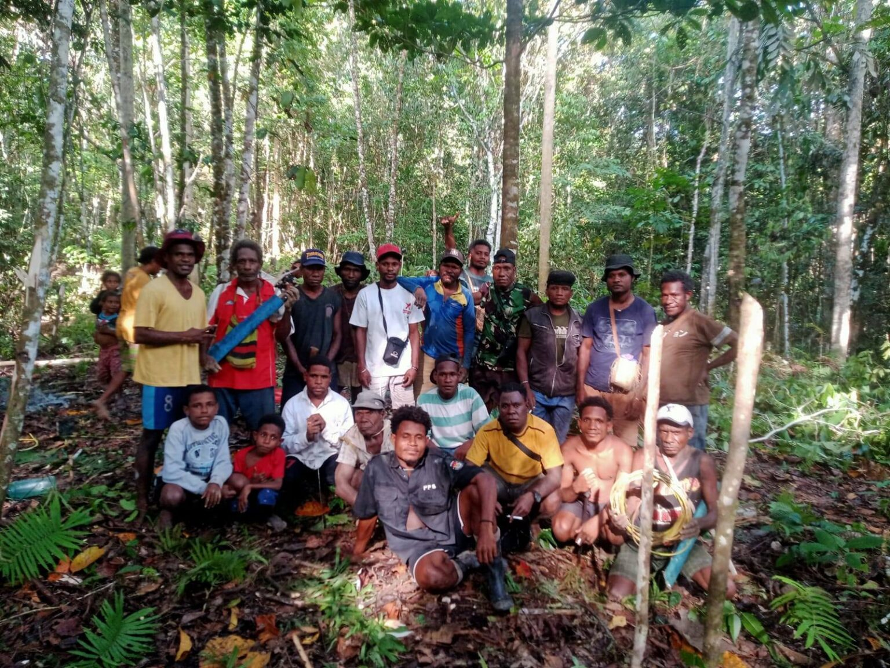

Literasi Lingkungan
Mairasi: Menjaga Suara Hutan sebagai Warisan Generasi Muda Papua
Masyarakat adat suku Mairasi di Kaimana terus berupaya memperkuat kedaulatan mereka atas hutan adat melalui dokumentasi pengetahuan tradisional dan pemetaan wilayah.
Baca selengkapnya